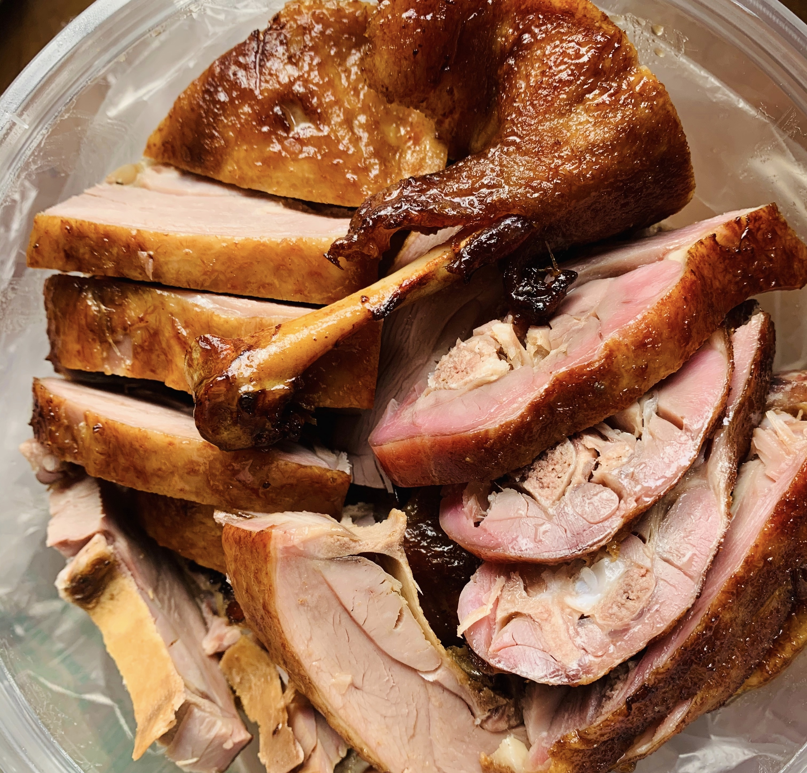

乐山甜皮鸭的特点是：颜色红亮，口感咸甜，鸭皮酥脆带有点甜味，肉质非百度常细嫩，乐山甜皮鸭是四川乐山特产中的一个经典，可以直接冷吃，也可以吃热的，但是并不建议用微波炉打热，因为用微波炉打热后吃到鸭皮部分会有一股鸭毛的味道，那个是你用什么办法都去不了的。也不建议蒸热吃，那样会让甜皮鸭的脆皮变软，影响口感，鸭肉味道变淡，影响味道。除此以外，除了乐山人爱吃甜皮鸭以外，乐山甜皮鸭更是受各地游客的喜爱。


鸭肉可以促进血液循环，祛风止痛，温燥除湿，补肾助阳。对于降低血压，抗心律不整也有很好的作用。好吃的甜皮鸭一定会被当地人称赞，走在街上看见哪家店里面人多那你进去，准没错，因为只有好的味道才能收服挑剔食客的胃不是？